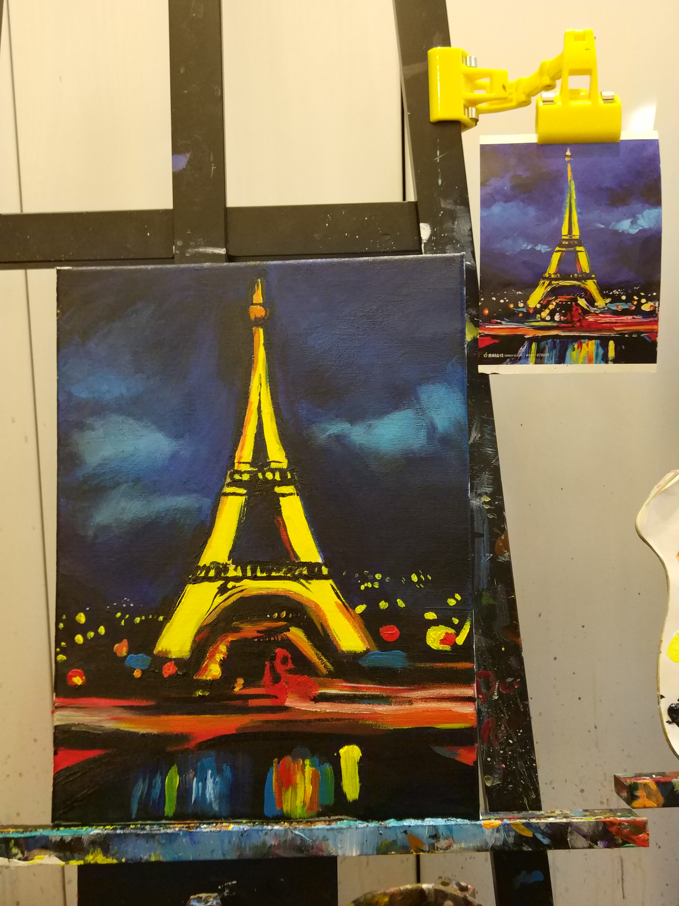

Shanghai Botanical Garden
After taking TOEFL exam in Shanghai High school, i had a sightseeing there and happened to came across my highschool classmate who has not been met for three years.

.jpg)

ABOUT
Archery
The place is located in Wujiaochang.
An outside and inside climbing club is nearby as well.
Archery requires people to hold arch still, target the aim precisely and let the arrow go in a flash.
That day Elaine used Plaroid to take a photo of me, we talked a lot.
She is exactly my model.
EXCITING
looking forward to going there again
April is happy,
fruitful and colorful.
Shanghai Botanical Garden
After taking TOEFL exam in Shanghai High school, i had a sightseeing there and happened to came across my highschool classmate who has not been met for three years.
THEOIL PAINTING in MAYDAY holiday
Happy time with zyh,zqw&zyy
We spent whole afternoon in a studio which is located in Jiangan. I chose the Eiffel Tower to mimic. A teacher there helped me to polish my painting up a lot.Painting is enjoyable, it makes me calm down. I have to focus on the outline and every corner, details of the picture, the proportion is vital to make a vivid painting.
The method of oil painting is quite different from the painting i used to know. I could hardly to memorize some painting techiques i learned in my childhood. It has been a long time before i painted this time, which is a pity.
To my great surprise, everbody seems to achieve a vivid painting. It seems that an adult will possess mature visual and perceptual sikll. By contrast, children need hard exercise and longer time to achieve something
Smiley Peat Garden First tried durian pizza with Elaine
Acquired 96 in TOEFL.....................................Academic performance
Obtained PwC SDC offer (declined.................excellent chance
Passed the interview exchange to Janpan(declined.............................................................Recognition
A
Achievement
in April
New experience of some new activities with old friends
“ In addtion, it was the first time that i hanged out with my roomates. we had delicious hot pot in the evening! ”